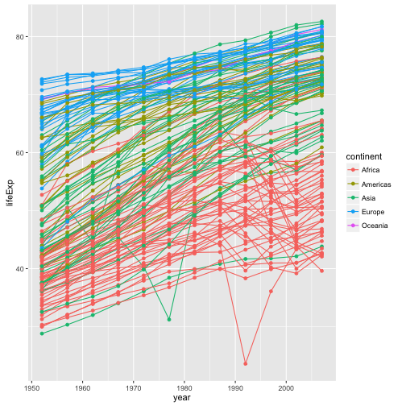
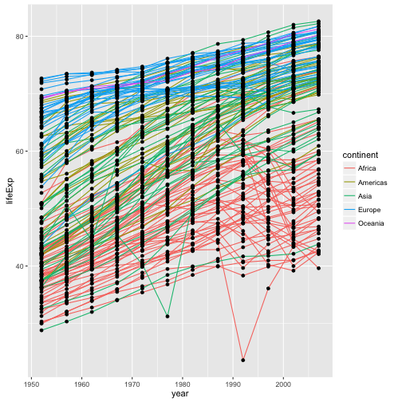
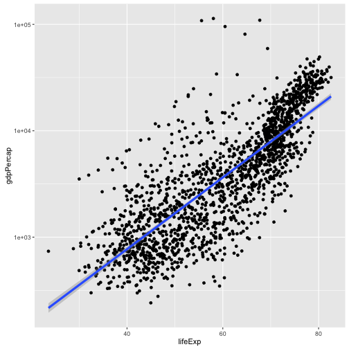
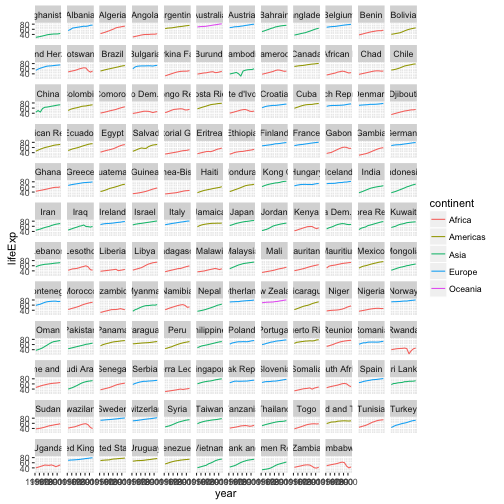
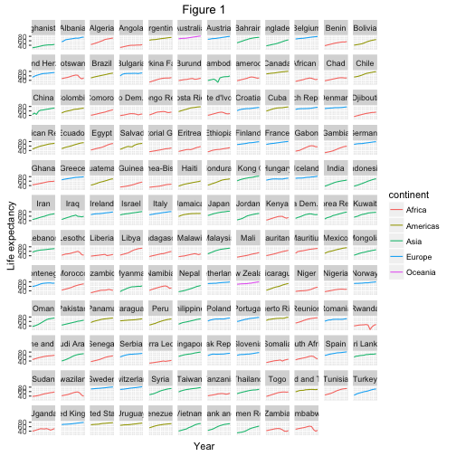
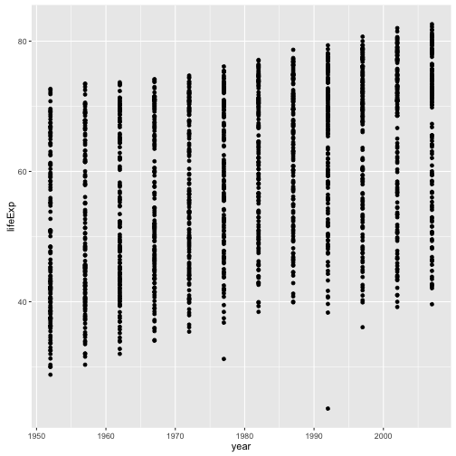
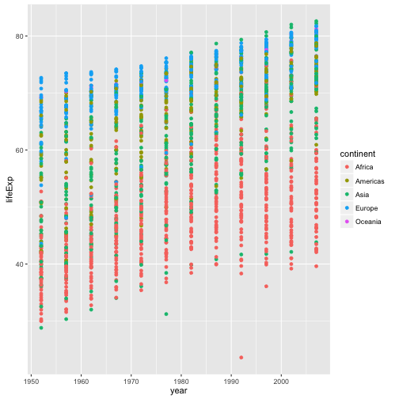
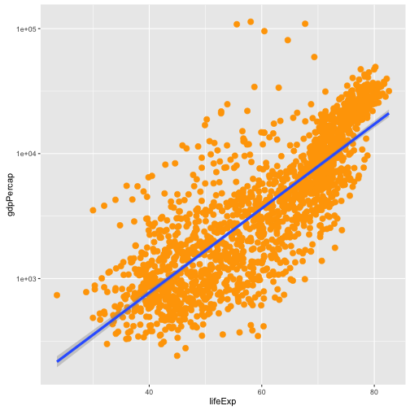
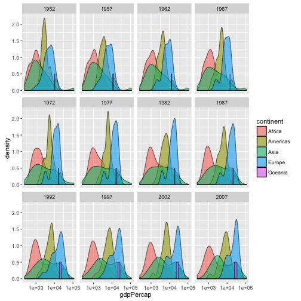

재현가능한 과학적 분석을 위한 R
논문 품질 그래프 생성하기
학습 목표
ggplot2팩키지를 사용해서 논문품질 그래프를 생성할 수 있다.- 그래픽 문법(Grammar of Graphics)의 기초를 이해한다:
- 미학 계층
- 기하 계층
- 통계량 추가
- 척도 변환
- 집단별 색깔입히기 혹은 창으로 구분
데이터를 도식화하는 것이 변수 다양한 관계를 재빨리 탐색하는 최상의 방식 중 하나다.
R에는 세가지 주류 도식화 시스템이 존재한다: 기본 도식화 시스템,lattice 팩키지, ggplot2 팩키지.
ggplot2 팩키지를 학습하는데 이유는 논문품질 그래프 생성에 있어 가장 효과적이기 때문이다.
ggplot2는 그래픽 문법에 기반했다. 즉, 어떤 그래프도 동일한 구성요소 집합으로 표현된다: 데이터 집합, 좌표 시스템, geoms 집합 – 데이터 점에 대한 시각적 표현.
ggplot2를 이해하는 핵심은 그림을 계층으로 사고하는 것이다: 포토샵, 일러스트레이터, 잉크스케이프 같은 이미지 편집 프로그램으로 작업하는 것과 같다.
예제를 가지고 시작해본다:
library(ggplot2)
ggplot(data = gapminder, aes(x = lifeExp, y = gdpPercap)) +
geom_point()
그래서, 처음으로 수행하는 작업은 ggplot 함수를 호출하는 것이다. 이 함수가 R에게 새로운 그림을 생성하고, ggplot 함수에 전달하는 어떤 인자도 해당 그림에 전역 선택옵션(그림에 있는 모든 계층에 적용)임을 전달한다.
ggplot에 인자를 두개 전달했다. 먼저, ggplot에 그림에 사용할 데이터가 무엇인지 전달한다; 번 예제에서 앞에서 불러온 gapminder데이터. 두번째 인자를 aes함수에 전달했는데, ggplot에게 데이터에 나온 변수를 도식화하는 그림의 미학적인 속성에 매핑하는 방법을 전달한다; 이번 경우에는 x와 y 위치. 여기서 ggplot에 gapminder데이터프레임 “lifeExp” 칼럼을 x-축에, “gdpPercap” 칼럼을 y-축에 도식화한다. 명시적으로 aes에 칼럼명을 전달(예를 들어, x = gapminder[, “lifeExp”])하지 않은 것에 주목한다. 이것이 가능한 이유는ggplot` 함수가 데이터에 존재하는 칼럼을 식별할만큼 똑똑하기 때문이다!
그 자체로, ggplot함수를 호출한다고 도식화가 바로 되는 것은 아니다:
ggplot(data = gapminder, aes(x = lifeExp, y = gdpPercap))
ggplot 함수에 데이터를 시각적으로 표현하는 방법을 전달할 필요가 있다. geom 계층을 추가해서 작업이 수행된다. 본 사례에서, geom_point를 사용했다; x와 y 사이 관계를 시각적으로 산점도 형태로 표현하도록 ggplot에게 전달한다:
ggplot(data = gapminder, aes(x = lifeExp, y = gdpPercap)) +
geom_point()
도전과제 1
상기예제를 변경해서, 기대수명이 시간에 따라 어떻게 변해왔는지 시각화하는 그림을 생성한다:
ggplot(data = gapminder, aes(x = lifeExp, y = gdpPercap)) + geom_point()힌트: gapminder 데이터셋에 “year”라는 칼럼이 있는데, x-축에 나타나야 된다.
도전과제 2
이전 예제와 도전과제에서, aes 함수를 사용해서 geom 산점도로 x 와 y 지점을 각 점에 대해 표현했다. 변경할 수 있는 또다른 미학적 속성은 각 점에 대한 색깔이다. 앞선 도전과제 코드를 변경해서 “continent” 대륙별로 각 점에 색을 입힌다. 데이터에서 어떤 경향성을 볼 수 있는가? 예상했던 경향성인가?
계층
산점도가 아마도 시간에 따라 변하는 정보를 시각화하는데 최선은 아니다. 대신에, ggplot에 선그림(line plot)으로 데이터를 시각화한다:
ggplot(data = gapminder, aes(x=year, y=lifeExp, by=country, color=continent)) +
geom_line()
geom_point 계층을 추가하는 대신에, geom_line 계층을 추가했다. 미학적으로 by를 추가해서, ggplot이 각 국가를 직선으로 연결해서 도식화한다.
하지만, 직선과 점을 함께 시각화하려고 하면 어떨까? 단순히, 또다른 계층을 그림에 추가하면 된다:
ggplot(data = gapminder, aes(x=year, y=lifeExp, by=country, color=continent)) +
geom_line() + geom_point()
각 계층은 이전 계층 위에 도식화됨에 주목한다. 이번 예제에서, 점이 직선 위에 도식화되었다. 다음에 도식화한 시연이 나와있다:
ggplot(data = gapminder, aes(x=year, y=lifeExp, by=country)) +
geom_line(aes(color=continent)) + geom_point()
이번 예제에서, 미학적인 색상 매핑이 ggplot에 전역으로 설정된 점 선택옵션에서 geom_line 계층으로 이동했다. 그래서, 해당 점에는 더이상 적용되지 않는다. 이제 분명하게 직선 위에 점이 도식화된 것을 확인할 수 있다.
도전과제 3
앞선 예제에서 점과 직선 계층을 뒤바꾼다. 어떻게 될까요?
변환과 통계량
ggplot으로 데이터 위에 통계적 모형을 쉽게 겹치게 할 수 있다. 이를 시연하기 위해서, 첫번째 예제로 되돌아간다:
ggplot(data = gapminder, aes(x = lifeExp, y = gdpPercap, color=continent)) +
geom_point()
현재, 일인당 GDP에 일부 심각한 이상점이 있어 점사이 내재된 관계를 보기 힘들다. scale 척도함수를 사용해서 y-축 척도를 변경한다. 이러한 제어를 통해 데이터 값과 미학적인 시각값 사이 매핑을 제어한다.
ggplot(data = gapminder, aes(x = lifeExp, y = gdpPercap)) +
geom_point() + scale_y_log10()
The log10 function applied a transformation to the values of the gdpPercap column before rendering them on the plot, so that each multiple of 10 now only corresponds to an increase in 1 on the transformed scale, e.g. a GDP per capita of 1,000 is now 3 on the y axis, a value of 10,000 corresponds to 4 on the y axis and so on. This makes it easier to visualise the spread of data on the y-axis.
We can fit a simple relationship to the data by adding another layer, geom_smooth:
ggplot(data = gapminder, aes(x = lifeExp, y = gdpPercap)) +
geom_point() + scale_y_log10() + geom_smooth(method="lm")
We can make the line thicker by setting the size aesthetic in the geom_smooth layer:
ggplot(data = gapminder, aes(x = lifeExp, y = gdpPercap)) +
geom_point() + scale_y_log10() + geom_smooth(method="lm", size=1.5)
There are two ways an aesthetic can be specified. Here we set the size aesthetic by passing it as an argument to geom_smooth. Previously in the lesson we’ve used the aes function to define a mapping between data variables and their visual representation.
Challenge 4
Modify the color and size of the points on the point layer in the previous example.
Hint: do not use the aes function.
Multi-panel figures
Earlier we visualised the change in life expectancy over time across all countries in one plot. Alternatively, we can split this out over multiple panels by adding a layer of facet panels:
ggplot(data = gapminder, aes(x = year, y = lifeExp, color=continent)) +
geom_line() + facet_wrap( ~ country)
The facet_wrap layer took a “formula” as its argument, denoted by the tilde (~). This tells R to draw a panel for each unique value in the country column of the gapminder dataset.
Modifying text
To clean this figure up for a publication we need to change some of the text elements. The x-axis is way too cluttered, and the y axis should read “Life expectancy”, rather than the column name in the data frame.
We can do this by adding a couple of different layers. The theme layer controls the axis text, and overall text size, and there are special layers for changing the axis labels. To change the legend title, we need to use the scales layer.
ggplot(data = gapminder, aes(x = year, y = lifeExp, color=continent)) +
geom_line() + facet_wrap( ~ country) +
xlab("Year") + ylab("Life expectancy") + ggtitle("Figure 1") +
scale_fill_discrete(name="Continent") +
theme(axis.text.x=element_blank(), axis.ticks.x=element_blank())
This is just a taste of what you can do with ggplot2. RStudio provides a really useful cheat sheet of the different layers available, and more extensive documentation is available on the ggplot2 website. Finally, if you have no idea how to change something, a quick google search will usually send you to a relevant question and answer on Stack Overflow with reusable code to modify!
Challenge 5
Create a density plot of GDP per capita, filled by continent.
Advanced: - Transform the x axis to better visualise the data spread. - Add a facet layer to panel the density plots by year.
Challenge solutions
Solution to challenge 1
Modify the example so that the figure visualise how life expectancy has changed over time:
ggplot(data = gapminder, aes(x = year, y = lifeExp)) + geom_point()
Solution to challenge 2
In the previous examples and challenge we’ve used the aes function to tell the scatterplot geom about the x and y locations of each point. Another aesthetic property we can modify is the point color. Modify the code from the previous challenge to color the points by the “continent” column. What trends do you see in the data? Are they what you expected?
ggplot(data = gapminder, aes(x = year, y = lifeExp, color=continent)) +
geom_point()
Solution to challenge 3
Switch the order of the point and line layers from the previous example. What happened?
ggplot(data = gapminder, aes(x=year, y=lifeExp, by=country)) +
geom_point() + geom_line(aes(color=continent))
The lines now get drawn over the points!
Solution to challenge 4
Modify the color and size of the points on the point layer in the previous example.
Hint: do not use the aes function.
ggplot(data = gapminder, aes(x = lifeExp, y = gdpPercap)) +
geom_point(size=3, color="orange") + scale_y_log10() +
geom_smooth(method="lm", size=1.5)
Solution to challenge 5
Create a density plot of GDP per capita, filled by continent.
Advanced: - Transform the x axis to better visualise the data spread. - Add a facet layer to panel the density plots by year.
ggplot(data = gapminder, aes(x = gdpPercap, fill=continent)) +
geom_density(alpha=0.6) + facet_wrap( ~ year) + scale_x_log10()